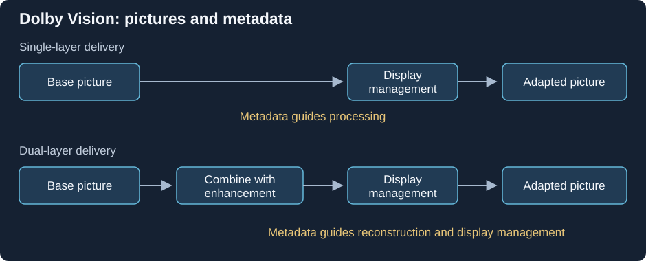

How Dolby Vision Works
A Dolby Vision release carries a produced picture and information for reproducing it on different display targets. To understand what reaches the screen, follow three jobs: prepare the intended image, represent it for delivery, and use the delivered image and metadata during playback.
Begin with the authored picture
A colorist establishes the HDR master on a reference display. Faces, ordinary surfaces, bright reflections, and dark details receive deliberate relationships. The master can contain a large light range without making every shot use its extremes.
Analysis then describes relevant picture characteristics over a shot or frame. A trim pass can review a mapped version for another target and adjust its balance where needed. The resulting information can travel alongside the image rather than requiring a complete independent movie for every possible display.
Imagine a dim room followed by a bright exterior. A program-wide peak alone cannot describe the distribution within both shots. Scene-specific information lets the playback mapping use more context, while the creative trims can preserve decisions made during preparation.
These are instructions about how an existing produced picture is handled. They do not replace the captured and encoded information that the picture contains.
Separate the coded image from its accompanying data

Conceptual delivery and reconstruction roles. The selected profile defines the signal interpretation, layers, and packaging.
The base layer is the main coded picture. The RPU metadata supplies Dolby Vision information associated with that picture. Some profiles also contain an enhancement layer, which can contribute additional reconstruction information.
A report of BL+RPU therefore identifies one picture layer plus metadata. BL+EL+RPU adds enhancement data. These names describe roles within the presentation, while container tracks describe how that data is packaged. One reported video track can carry more than one codec layer.
The RPU has a relationship to the actual sequence. Analysis and trims belong to the pictures from which they were prepared. If an edit moves the pictures while leaving the old associations in place, the mapping can receive information for another shot. RPU metadata follows that timing relationship in detail.
For dual-layer content, full reconstruction may need both base and enhancement information. A compatible base can sometimes be used independently, but that is another reconstruction path. The layer article explains the roles, and MEL/FEL identifies whether a picture residual is present.
A profile defines the delivery arrangement
Dolby Vision has several profiles because different applications need different codecs, layer structures, and base interpretations. A profile identifies that feature arrangement; its level specifies processing limits such as pixel rate, width, and bitrate.
Some base signals have a defined HDR10 or HLG interpretation for a path that does not process Dolby Vision. Other signals use Dolby Vision-specific reshaping and color representation. In the latter case, a codec decoder can recover samples correctly while an ordinary HDR renderer assigns those samples the wrong color meaning.
That distinction separates two kinds of support. Codec support reconstructs the compressed sample description. Dolby Vision profile support supplies the additional signal interpretation and metadata processing for the selected arrangement. Both are relevant to the full route.
The profile family can be browsed through its individual pages. A higher profile number denotes another arrangement rather than a higher-quality grade of the movie.
Follow a compatible-base session
Take a source whose base has a defined HDR10 interpretation. A container reader locates its video and Dolby Vision information. The selected decoder reconstructs the available image data. A Dolby Vision-capable processing route interprets the profile, associates the metadata with the right pictures, and performs the required reconstruction and display management.
The mapping also needs a target. The output's useful brightness, color volume, and rendering mode help determine how the produced picture is adapted. Scene information and creative trims can guide that adaptation, while the physical output still supplies its own limits.
If the route instead uses the compatible HDR10 base, it can present a valid HDR picture with a different set of adaptation inputs. That outcome differs from full Dolby Vision processing and from a failed decode. The base's correctness is established by its defined signal arrangement, not by the word Dolby Vision alone.
An SDR destination requires another operation: interpreting the available image and producing suitable SDR brightness, color, and encoding. Removing Dolby Vision metadata does not carry out that conversion. Fallback compatibility distinguishes those paths.
Locate the operations in an Emby session
The source record, server delivery, app processing, and display input each describe a stage:
| Stage | Useful evidence |
|---|---|
| Source | Profile, base compatibility, codec, layers, detected RPU |
| Server delivery | Direct Play, stream copying, or newly encoded video |
| App and decoder | Support for the delivered packaging and profile operations |
| Output and display | The received presentation and active rendering mode |
Direct Play reports server delivery of the original file. The app still needs to open the packaging, decode the coded data, interpret the profile, and prepare its output. A video transcode instead creates a new picture presentation, whose output should be examined as that rendition.
A display indicator is evidence about an output mode. It does not record every operation upstream. For example, an enhancement residual could be absent from the delivered stream or unused by the decoder while a later path still produces Dolby Vision output. Confirming an original enhancement contribution requires information about reconstruction, not only the final indicator.
The same discipline applies to a metadata-present flag. It identifies source data that was detected, while correct timing, supported processing, and coherent output determine whether the intended information reached the picture.
Compare the adaptation in the same produced image
Use the same release, same scene, and known playback routes. Inspect faces and ordinary surfaces as well as the brightest reflection. A mapping can make the peak fit while redistributing contrast elsewhere; temporal changes can matter across flashes and cuts.
A separate HDR10 or SDR release may include another grade or trim. It gives context but is not automatically the required pixel result of this release's Dolby Vision processing. Keeping the produced source and each route identified turns the comparison into a concrete question: which image information and mapping inputs were used, and how did that change the displayed relationships?